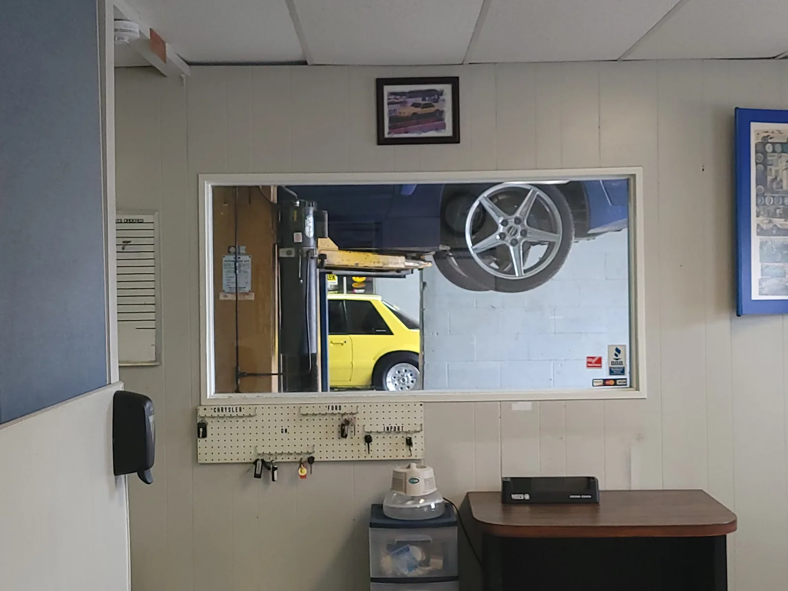
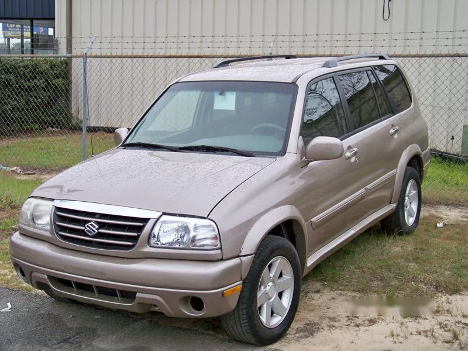
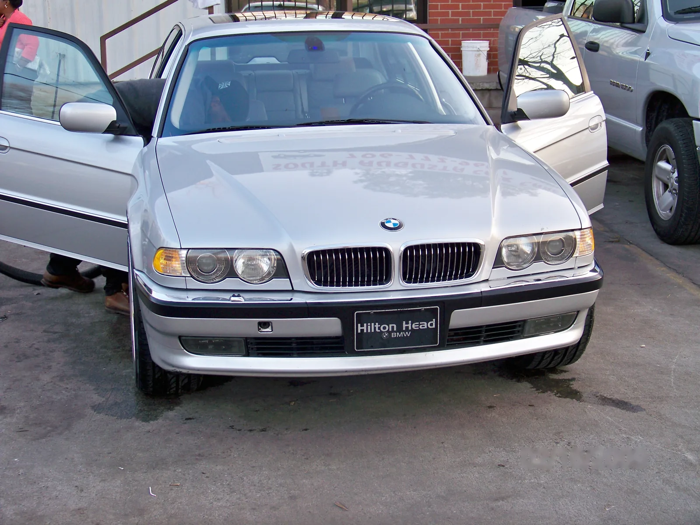
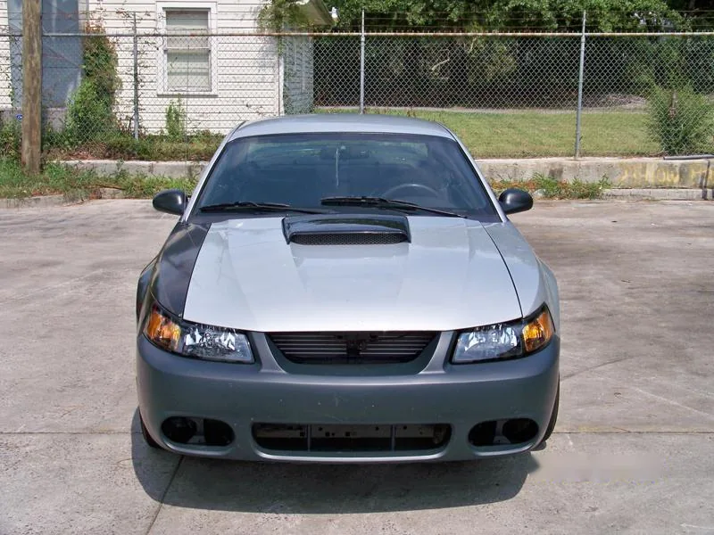
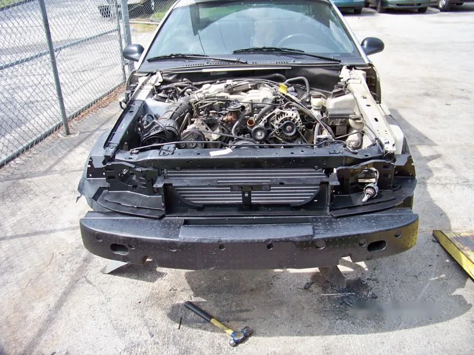
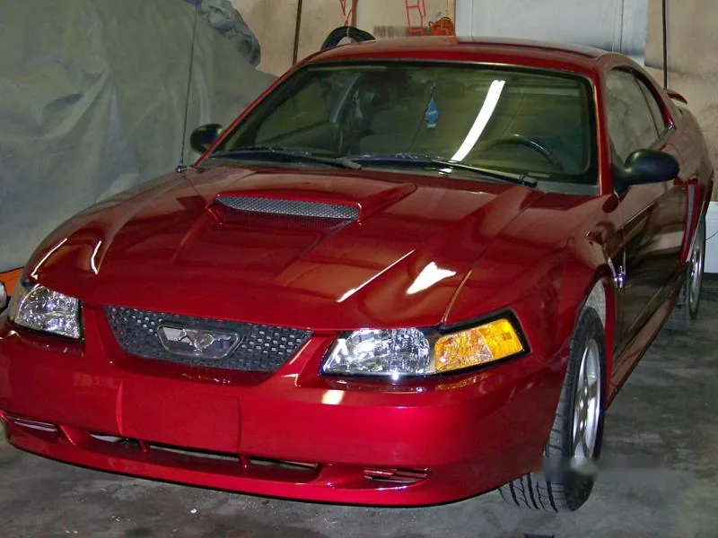
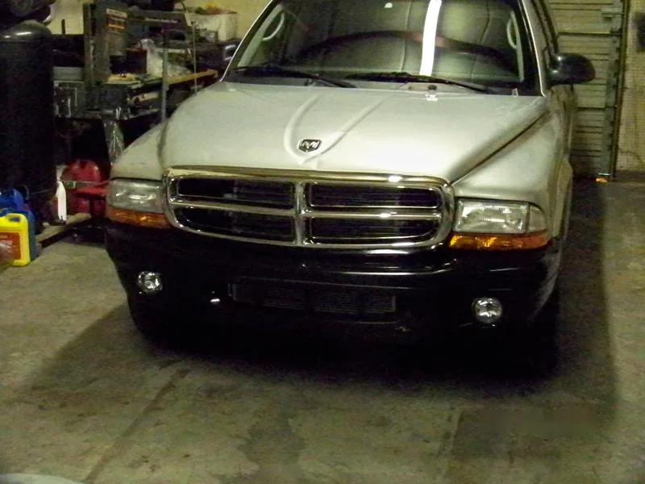
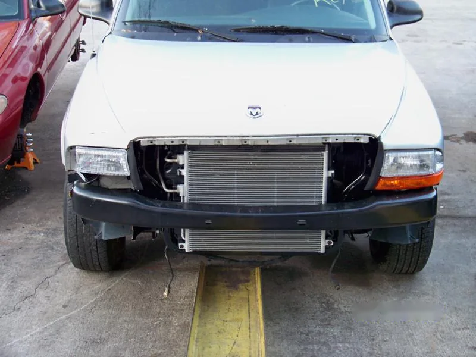

Services
Fix it right. Keep it calm.
From oil changes to full diagnosis, plus the body work, wash and detail services listed on their original site.
What they do
“We do them all.”
“Here at Quiet Storm Auto Care we offer minor and/or major mechanic work, auto body repair, and wash & wax details, all for a reasonable price and for your satisfaction. It doesn't matter what you drive, we do them all from compact cars to 18 wheelers, RV's, and boats.”

Confirmed on Google
Mechanical repair & diagnosis
Google lists Quiet Storm as an auto repair shop and mechanic offering oil changes, and customers describe diagnosis, alternator replacement, routine maintenance and getting broken-down cars back on the road.
- Diagnosis, shown and explained to you
- Oil changes
- Routine maintenance
- Alternator replacement
- Repairs after a breakdown or tow-in
“My vehicle was towed there after it catastrophically broke down and they diagnosed and fixed the problems…” · Anthony Zimlich

From their original site · call to confirm
Auto body repair
Their original website lists “body repair work” and “auto body repair”, and its Testimonials page showed four full collision repairs, below.
- Collision and front-end repair
- Panel and bumper replacement
- Paint and refinish
- Call in for body-repair prices

From their original site · call to confirm
Car wash, wax & full detail
Washes for anything from cars to 18-wheelers, RVs and boats, plus wash & wax and full details. Their site offered a Ladies’ Day discount every day and a Men’s Day discount Mondays and Wednesdays.
- Car wash, by vehicle size
- Wash & wax
- Full detail
- Teacher, military & senior discount prices

From their original site · call to confirm
Seat & carpet shampoo and dye
Shampoo for seats (leather or cloth) and carpet, and dye “for a newer looking car”. Spot dye was also available. Same-day service by appointment; bring the vehicle in early.
- Seat shampoo, leather or cloth
- Carpet shampoo
- Seat dye & carpet dye
- Spot dye
How a visit goes
Four steps, in customers’ words.
A simple outline built from the Google listing and real reviews, not an official process.
Step 01
Call for an appointment
The Google listing says an appointment is required. Call (706) 814-5930, Monday to Thursday.
Step 02
See what your car needs
“Kenny took the time to carefully explain everything my vehicle needed, showed me the areas that needed attention…”
Shewania Moore · Google reviewStep 03
An estimate that holds
“They diagnosis and estimate did not change.”
Consuella Carter · Google reviewStep 04
Back on the road
“…he have my 03 back on the road in no time.”
Tayy · Google review
Before & after
Storm, then calm.
Four body repairs from the Testimonials page of their original site (photos dated 2009). Drag the bolt on each one.






Book your appointment
Not sure what it needs? Bring it in.
Appointment required. Call (706) 814-5930 to book.
Mon–Thu 9 AM–6 PM ET · by appointment